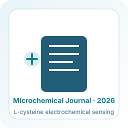
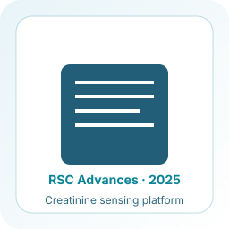
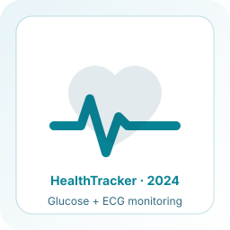
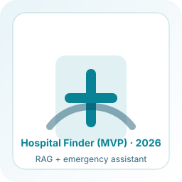
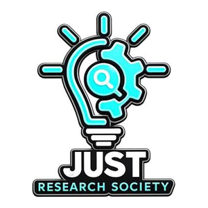
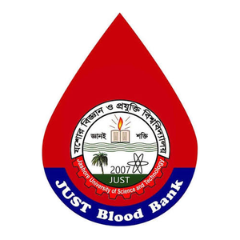

General Secretary
JUST Robo Society
2024–25Bridging biology and intelligence through advanced sensing technologies

I am a Biomedical Engineering graduate from Jashore University of Science and Technology with three years of hands-on research in electrochemical biosensors. My work spans sensor fabrication and surface modification, nanomaterial synthesis, electrochemical characterization, and real-sample analysis, and I’ve co-authored two peer-reviewed publications.
My research centers on low-cost, accessible diagnostic tools for resource-limited settings, particularly wearable biosensors and lab-on-chip platforms. Through my thesis on metabolite biomarkers in breast cancer, I’ve developed a strong interest in cancer diagnosis, especially how biomarker-based detection could identify disease earlier and how sensing technologies could bring that testing closer to patients. I enjoy working across disciplines, from the lab bench to code, to build intelligent systems that are practical as well as technically sound.

Published in Microchemical Journal, 2026

Published in RSC Advances, 2025

Autoplay gallery (shuffled). Finishes one conference, then switches to the next.
Laboratory of Nano bio and Advanced Materials Engineering (NAME Lab)

2024
Machine Learning-Enabled Dual Sensor Platform for comprehensive diabetic care monitoring. Integrated real-time glucose and ECG monitoring with intelligent alert systems.

2026
AI-based emergency healthcare assistant for hospital search and first-aid guidance using Groq API and retrieval-augmented generation (RAG).
Visit Live AppFrom nanomaterial engineering and electrochemical biosensing to computational biomarker analysis and digital-health prototyping.
Nanomaterials & Characterization · Synthesis · Surface modification · Spectroscopy
Materials preparation and characterization supporting the development of electrochemical sensing interfaces.
In electrochemical sensing, the composition of the nanomaterial layer and its contact with the electrode influence the analytical response, so preparing and characterizing the material is part of sensor development.
Nanomaterial synthesisNanocomposite synthesisElectrode surface engineeringFTIRATRTi3C2Tx/carbon black nanocomposite hybrid for L-cysteine sensing.
Electrochemical Biosensing · Electrode engineering · Electrochemical measurement
My core laboratory research experience centers on electrochemical sensing, electrode engineering, and analytical testing using real biological samples.
Electrochemical biosensing measures electrical responses at an electrode interface to investigate an analyte. Performance depends on the electrode surface, measurement conditions, target-analyte response, and sample matrix.
Biosensor fabricationElectrode surface modificationElectrochemical characterizationExperimental design & optimizationSmartphone-based creatinine sensing and Ti3C2Tx/carbon black L-cysteine sensing in blood serum.
Creatinine paper, RSC Advances 2025L-cysteine paper, Microchemical Journal 2026
Techniques are ones I have used; not every technique was used in every study.
Real-sample analysis · Human blood serum
A sensor must be judged in the sample it measures. Human blood serum is a complex biological matrix, so serum testing raises considerations that a simple buffer does not.
Human blood serumReal-sample analysisElectrochemical characterizationCreatinine paper, RSC Advances 2025L-cysteine paper, Microchemical Journal 2026
No recovery, interference, or clinical-validation results are claimed here; see the papers.
Computational Research & Data Analysis · LC-MS metabolomics · Statistics · Machine learning
Computational and statistical workflows for integrating biomedical datasets, identifying candidate biomarkers, and evaluating analytical patterns. In electrochemical work, interpretation means reading signal behavior against measurement conditions.
PythonCMetabolomics WorkbenchHMDBKEGGBachelor’s thesis · 3 public datasets · n = 337
Reproducible Metabolite Biomarkers in Breast Cancer: A Cross-Study Harmonization and Meta-Analysis
Five consistently depleted amino-acid candidates.
Research candidates only: not published and not clinically validated.
Biomedical Systems & Digital Health · Sensor integration · Prototyping · Healthcare software
Biomedical technology prototyping combining physiological sensing, monitoring workflows, and healthcare-oriented software applications.
HealthTrackerHospital FinderRAGFastAPIPostgreSQLPrototype dual-sensor platform integrating glucose sensing and ECG monitoring in a real-time workflow for diabetes care.
AI-assisted emergency healthcare assistant.
Prototypes: not clinically certified. Hospital Finder does not replace emergency services or professional medical care.
Scientific Research & Communication · Experimental design · Interpretation · Manuscripts
Planning experiments, interpreting results, and translating research findings into structured scientific outputs.
Academic writingManuscript preparationMultidisciplinary collaborationCo-author of two peer-reviewed papers. Posters: 23rd Science Council of Asia Conference (30 Nov to 2 Dec 2024); International Biotechnology Conference 2025.
Creatinine paper, RSC Advances 2025L-cysteine paper, Microchemical Journal 2026
Conceptual overview of related capabilities. Individual projects do not all follow this sequence.
Click to view in details.
JUST Robo Society
2024–25
JUST Research Society
2024–2026
Regular Blood Donor
OngoingScience
Rajshahi Board
Science
Rajshahi Board
Department of Biomedical Engineering
Jashore University of Science and Technology (JUST)
Jashore 7408, Bangladesh
Professor and Chairman
Department: Chemical Engineering
Director: NAME Lab (Nano-bio and Advanced Materials Engineering)
Institution: Jashore University of Science and Technology, Jashore 7408, Bangladesh
Associate Professor and Chairman
Department: Biomedical Engineering
Institution: Jashore University of Science and Technology, Jashore 7408, Bangladesh
Lecturer
Department: Biomedical Engineering
Institution: Jashore University of Science and Technology, Jashore 7408, Bangladesh